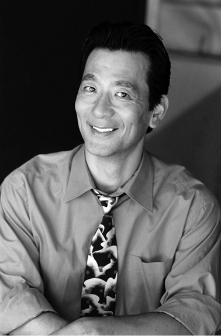

| アップルグリーンのソックス――ネオ昭和青春ノベル シリーズ１ | |
| 長土居政史 | |
| (2015) | |
〈アップルグリーンのソックス〉......田舎っぽさが残る東京郊外に住むヒロシは小柄だが熱血野球少年。草野球を卒業し、誰もが憧れる地元のリトルリーグ・チームに入団するのが夢。信頼していた仲間の裏切り、新たな友情、強い絆の家族愛を通して、ヒロシは本当に大切なものは何かを自覚し始める。少年が少し大人への成長物語。
長土居 政史
知玄舎 電子書籍
◎本書のあらまし
〈アップルグリーンのソックス〉...... 田舎っぽさが残る東京郊外に住むヒロシは小柄だが熱血野球少年。草野球を卒業し、誰もが憧れる地元のリトルリーグ・チームに入団するのが夢。信頼していた仲間の裏切り、新たな友情、強い絆の家族愛を通して、ヒロシは本当に大切なものは何かを自覚し始める。少年が少し大人への成長物語。
東京都心から電車で一時間ほど西に進むと松川市がある。いわゆる東京都下といわれる郊外で、林や畑が残る地方都市を感じさせる地域である。松川南小学校の五年生になった立花ヒロシは大の野球好きだ。幼稚園の頃からの遊び仲間であるタケオと、気に入ったプロ野球選手の投げ方や打ち方、走り方のモノマネを熱心に研究し、お互いに大笑いしながら、時には冷やかしながら披露し合うのが楽しみな日課になっている。まさに心は野球一筋少年。いつの日か、地元のリトル・リーグのチームに入団できることを夢見ているのだ。憧れのあの赤と黒のカッコイイユニフォームが着れるようにと......。
三月生まれのヒロシは、体は小さいが運動神経は抜群だ。足も速い。ポジションはレフトだったが今はショートで打順は５番。バントも巧みに出来る。守備もうまい。スローイングがスムーズでダブルプレーも難なくこなせる器用な選手だ。とにかく明るい活発な少年である。
四月生まれのタケオは、体格が縦にも横にも、ヒロシより二回り大きい。クリーンアップを任せられるパワーヒッター。三振も多いが、一発ホームランの魅力がある長距離バッターだ。ポジションはキャッチャー。ズシっと頑丈そうな大きな体にいかつい顔は、怒らせると怖いだろうなあ、と思わせる雰囲気を醸し出す。確かに自信と度胸はあるが、実は繊細で真面目な性格である。しかしそういうタケオをよく知ってるのはヒロシぐらいだ。この学校で草野球の少年たちを集め、もしドラフト会議が行われたら間違いなく二人とも一位、二位に指名されることは間違いない。
ヒロシの自由奔放でやんちゃな素振りが、周りからは生意気に見られてしまい、ちょくちょく喧嘩に絡まれる要因となる。するとヒロシは、体の大きいタケオを連れて来て、相手をビビらせてその場を免れる、という場面がこれまで幾度もあった。まさに「虎の威を借る」であるが、お互い信頼出来るコンビだ......と少なくともヒロシは、そう思っていた。
タケオの体が大きくなるに連れ、態度も段々とデカくなっていく。さらなる自信がついてきた表れだろうとヒロシは理解していた。それにつけても、早生まれのヒロシは、どうして自分は四月生まれではなかったのかと何度も悔やんだ。少年期における一年間の成長の差は大きい。そんななかで、時折タケオがふと寂しげな顔をするのに気付いてもいた。どうせ勉強嫌いのタケオのことだ、宿題をさぼって親か先生に怒られたのだろうぐらいにしか思わず、特別気にはしてはいなかった。
ある日、ヒロシはタケオを誘って待ちに待ったリトル・リーグのセレクション・テストを一緒に受けに行く。五年生から、年二回市内で行われる入団テストを受ける資格が与えられる。ここ地元のチーム名は「松川ピラニアーズ」。ユニフォームとソックスは赤と黒を基調にしたあか抜けたデザインだ。肩にはリトル・リーグ公認のワッペンが縫い付けてあり、野球少年たちなら誰もが羨望の眼差しで見るユニフォームだ。草野球からの脱皮であり、本格的な野球を目指す少年たちの登竜門なのである。ヒロシやタケオも、この日のために自分たちなりに一生懸命練習してきたのだ。鉛入りのサポーターを手首や足首に巻いて、朝はランニング、夜は筋トレ。週末にはバッティングセンターで、速球に慣れる訓練をしてきたのだ。有名選手をモノマネした動きも少しは役立っているはずだ。
朝から快晴である。テスト会場のグラウンドに着くと、さすがに市内中から集まるだけあって、背が高く体格の良い中学生並みの少年たちが大勢参加してくる。憧れのユニフォームを身につけるんだ、と誰もがライバル意識を燃やし、大変な意気込みだ。グラウンドに熱気が感じられる。
「オレたちと同じ五年生かよ？ 大丈夫かな......」
珍しく気落ちするヒロシとは対照的にタケオは自信ありげだ。
「へっちゃら、へっちゃら、気にするな。全力でやったろうぜ！」
各自マイペースで入念にウォーミングアップをこなす。普段は楽観的でポジティブ志向のヒロシだが、この日ばかりは凄い選手たちを目のあたりにして、自分は井の中の蛙だったと痛感する。まず体で負けてしまっている、と自ら感じてしまう。このピリピリした雰囲気に完全に飲み込まれてしまっている。一方、タケオはいつも以上に胸を張って、強がって驚くほど明るく振る舞っている。三百人以上にも及ぶ参加者たちに登録した番号札が渡される。合格者は毎回通例、二十人前後というまさに厳しい競争率だ。
タケオは64 番。ヒロシは91 番。
布でできた番号札を安全ピンで右腰の脇腹あたりに付ける。
遠くに設置されたテントの中で、紺のジャージに野球帽、サングラスを掛けた中年のヒゲの男がどっしりと腰かけている。六年前、関東大会で優勝を成し遂げ、さらには全国大会でベスト４までピラニアーズを導いたあの伝説の三上監督だ。教育熱心でもあり、その実績を残した手腕を買われ、地元のスポーツ教育委員会の会長にも選出された。その後、ピラニアーズは一時低迷していたが、ここ数年は再び優勝を狙えるチーム作りに改善され期待も高まっている。
監督が「おい！ ガシ！」と、声をかけるたびに駆け寄り、指示を受けて動き回る、首が丸太のように太い高校生風の男が見える。このセレクションのための臨時スタッフのようだ。ガシとは不思議な名前だとヒロシは思った。
体力測定から始まり、垂直跳び、短距離走、バッティング、フィールディング、スローイング、遠投、さらに長距離走と続く。空振りしたり、エラーしたり、転んだりするヒロシ。伸び伸びとこなしているタケオ。皆、ここに参加しにきただけあって、とにかくうまい。球さばきは手慣れたもの。身体の動きがキレている。掛け声も遠くまで響く。バッティング・フォームも様になっている。多くの選手が金属バットで見事にボールの芯をとらえ、打球は軽々とバックスクリーンを超える。その飛距離を目で測るヒロシは、本当に度肝を抜かれた。
ガシさんのノックが鋭くて速い。イレギュラーバウンドする球を意図的に作り出している。まさに地獄の特訓だ。高度で巧みな技術は、ガシさんも間違いなくハイレベルの野球経験者なのだとすぐにわかった。ヒロシは、体を前に出して必死で球を捕ろうとするが、ボールをはじいてしまう。一方タケオは、ライナーの球をしっかり両手で受け取る。グローブも大きく見える。三上監督が遠くから腕を組んでじっと見ている。時折、指を指して、ガシさんに何かを指示している。気になる選手をメモしておくように伝えているのだろう。
太陽の輝きが増す。じりじり焦げ付くような暑さだ。大声で叫んで気合いを入れる鬼のような顔付きの少年から、汗か涙かわからないぐらい顔をくちゃくちゃにして、倒れそうになって走り続ける少年まで、皆必死だ。楽しさは消えた。真剣勝負だ。今後スポーツ選手としての将来の分かれ目、いや人生がここではっきり判断されるほど、残酷で厳しい実力社会の試金石なのだ。最後は試合形式で締めた。六時間かけて全科目を終えた。ぐったりして疲れ果てた少年たち、既に諦めて帰り出す少年たち、ホースの水を頭にかけてはしゃぐ少年たち、安堵感からか笑い声を出す少年たちもいる。
いよいよ合格結果発表だ。首の太いガシさんが、三上監督のいるテントからジョギングしてやってくる。皆が集まりざわざわし始める。しばらくして全員が座り終えると自然に静かになる。緊張感からかトイレに走り出す少年も現れる。ガシさんがノートを見ながら大声で番号を呼び始める。呼ばれた選手は立ち上がって喜ぶ。まだかまだかと待つ選手たちは心配顔に変わっていく。成績順でもなく、登録順でもなく、アトランダムに合格番号を呼んでいるようだ。呼ばれた選手たちはテントに行き、本人の証明の確認をして合格登録手続きをし始める。
「64 番！」
タケオの番号がついに呼ばれる。
「やったね！」
思わず声をかけるヒロシ。
「当然だろ」
あまり喜びもせず突っ張って答えるタケオ。
ヒロシの91 番はまだ呼ばれない。
合格者数はそろそろ二十人近くになっていた。
「ダメだったんじゃないの？」
タケオは、投げやりな冷たい口調で帰り支度を始め、ヒロシの前を横切ってテントに向かおうとする。泣きそうになるのを我慢してその場を動けないヒロシも、
「やっぱりダメか......」
とつぶやく。せかすタケオ。
その時である。
「残りあと一人！」
ガシさんが叫び、最後の番号を読み上げようとするが、太い首をかしげたままだ。
「あれ、なんだこりゃ？」
91 番が二人いるのだ。
「......」
いくつかの種目で、×（バツ）印と○（マル）印がついた二つの91 番が、ある係員によってメモされていた。ガシさんは、ノートを逆さにして見た。91 が16 になる。番号札を逆さに付けた選手がいたのだろうと、思い至った。慌てたガシさんは、三上監督に恐る恐る近寄り事情を話す。監督と相談の結果、91 番と16 番の二人を合格させると発表したのである。91 番はヒロシの番号だ。
「やったぁ！」
内心、とても興奮するヒロシ。
ところがである。あたりがざわめく。16 番の選手は誰かと見ると、背が高く、体が大きく、腕も太く、前に出てくるとさらに鋭い目が際立つ少年だ。それに彼の腰に付けた番号札が逆さになっているのである。おそらくテスト中に過激なスライディングをして番号札のピンが外れたのだろう。これでは、その少年が文句なしに合格していて、体が小さいヒロシは実力でなく、明らかに係員によるラッキーなミスで合格したと周りから疑わしい目で見られるのも無理もない。
タケオは帰り道にヒロシの合格を皮肉る。
「フェアと言えるかわからねえよな」
あまりにも辛らつなタケオの言葉にヒロシは言い返す。
「なんかさあ、タケオ、意地悪っぽくないか？」
「えっ？ いつもどおりだぜ。ヒロシには思ったことを隠したりはしないじゃん」
ヒロシも考え過ぎかなと思って、明るく、
「またな！」と声を掛けて二人は別れる。
タケオが、夕食を買って帰るからとコンビニに入って行くのが見えた。ヒロシはそのまま帰路についた。
その晩ヒロシの家では、高校生の姉の節子がケーキを買って待っていた。中流家庭で経済的に不自由なわけではなかったが、両親は共働きで家にはまだ帰って来ていない。
「おネェも言わなかったけど、合格すると信じていたわ。スコアの付け方も覚えたんだから......ボウリングより難しいわよね」
と祝ってくれる。節子より学年が二つ上の彼氏で、ヒロシの先輩にあたる高柳先輩もスポーツ用品店で夕方のアルバイトを終えて駆けつける。高柳先輩は長髪で背が高く、長い足にジーパンがよく似合う。どちらかというと、ロックンローラーの風貌だ。高柳先輩もリトル・リーグ出身である。彼こそ「松川ピラニアーズ」が関東大会を制覇した時のエースだったのだ。その後、松川南中学を経て、野球の強豪校である松川南高校に鳴り物入りで入学。直ぐにエースとして君臨していたが、バイク事故がもとで右ヒジを怪我し、甲子園どころか選手として野球を諦めてしまったのだ。
「さすが節子の弟だ！」
本当の弟のように喜んでくれるが、ヒロシの喜びは徐々に消えていく。ケーキはもったいないので食べはしたが、一体どんな味だったかも覚えていない。
その夜、ヒロシは悪夢に悩まされる。タケオの低い声が聞こえてくる。
「お前は、本当は受かってなかったんだぞ......」
さらにその声は、四方から響くように何度も迫ってくる。
翌朝、ヒロシの嫌な予感が当たり、クラスメートたちは「ラッキーな合格」のことを騒ぎ立てていた。女の子たちもヒソヒソと噂話している。からかわれるヒロシ。それもタケオが話題の中心となって大笑いしている。タケオのことを信頼出来る親友と思っていたヒロシにとってはショックだ。必要以上に粋がるタケオを見て、本来のタケオでないことはヒロシもわかっていたが、人は状況や力関係によって段々と変わっていくんだなあと、妙に冷静になって思ってしまった。
「ヒロシとは長い付き合いだからヨ〜！ なッ！」
タケオは軽くヒロシの肩を叩いて、「何でも言い合える仲なんだ」の関係を誇示するように愛嬌を振り巻く。周りも妙に納得している様子だ。それよりもヒロシは、なんとも言い返せない自分が嫌になり始めている。タケオの言っている「ラッキーな合格」がどうしても捨てがたい事実であることは、本人のヒロシが一番痛感しているからだ。
ヒロシとタケオのやり取りを、ぼんやりと眺めている生徒がいた。ジローである。日焼けした顔にスポーツ刈り、鼻水を垂らしている。普段はおとなしい天然系少年だ。体つきも普通だ。クラスの中では浮いた存在で、「一匹狼」というより表現より、「一匹狸」みたいな不思議な雰囲気をかもし出す。皆から嫌われているのでもない、ただ自分の確立した世界を持っているのだ。ジローの目だけをよく見るとマンガのキャラクターのようなタレ目のかわいい目をしている。狸顔には違いない。ジローのカバンには、フランスとアメリカの小さな国旗のシールが貼ってあるが、誰もそれには気付いていない。ジローは、ヒロシとタケオは昔から仲の良いのを知っていたので、兄弟喧嘩みたいなものとして静観するだけだった。タケオが粋がるのは寂しさの裏返しであることも、ジローにはわかっていた。
ヒロシは、節子や高柳先輩に励まされて、翌週の初練習に参加する。ところがボールを握る手に力が入らない。タケオはヒロシの方をチラチラ見てはニヤリと笑い、チームメートとこそこそと陰口を立てる。いよいよ合格者たちがユニフォームを揃えて、背番号を決める時が来た。チームメートからの嫌がらせが続く。それも陰険になってきた。
「あいつは背番号もらう資格ねェよな」
「ラッキーだから７７番がいいんだろ？」
「でも選手でなくコーチっぽい番号だな」
「どうせ試合は補欠で出れないんだから、関係ないじゃん」
ヒロシは聞こえない振りをするが、ついに限界に来た。
その晩、ついに弱音を吐く。ついていけなくなったと高柳先輩に相談する。
「心配するな、俺が話をつけてきてやる」
顔の効く先輩は、翌週、直接三上監督を訪ねる。ついでにヒロシを馬鹿にしたタケオやほかの少年たちを強く叱る。
「これから苦労と楽しみを共にするチームメートじゃないか！ 余計なことは口にするな！ 仲良くやれよ！」
「はい！ もう、しません。仲良くします」
タケオたちはシュンとなる。
次の練習にすっきりした気持ちで張り切って参加するヒロシ。望んでいた背番号「19 」も手に入った。死んだ祖母の命日であり母親の誕生日でもある19 番がちょうど空いていたのだ。テストでの「16 」と「91 」の合格番号と若干重なるのも、皮肉であり、因縁的な数字だった。タケオは８番。大きな背中に丸が二つ。よく似合っている。ところが、ヒロシはチームメートとの会話がぎこちない。朗らかに振る舞おうとしているヒロシの仕草が逆効果なのか、「ラッキーな合格」がしゃくに障るのか、不協和音を生じている。タケオたちからの風当たりは前にも増して一層強くなる。タケオの投げたボールがヒロシの背中をかすり、些細な口論になる。チームメートがあおり、エスカレートして取っ組み合いになる。興奮したタケオは、ヒロシの胸ぐらをグイっと掴みながら、
「お前は、本当は落ちていたんだぞ！ 俺、調べたんだぜ！」
とヒロシに怒鳴りつける。ヒロシは、肩の力が抜けたようにその場に座りこんだ。悔しさも悲しさもなく呆然となる。しばらくすると、突然パっと立ち上がり、自分の用具を持って肩を落とし独り練習場を後にした。チームメートも無言で見届けるだけだった。
帰宅したヒロシは、むかつきといらだちで、
「リトル・リーグやめることにし......。高柳先輩が余計なことをしたから！」
と姉の節子に八つ当たりする。ふてくされて黙り込むヒロシに、節子も困り果ててしまう。一晩中、布団を頭からかぶりながら、ヒロシは半べそをかいた。
翌朝、事情を知った高柳先輩は残念がる。
「ヒロシ君に直接会って謝るよ。俺が悪かった......やり過ぎたかな......」
「今は、そっとしてあげて。ほとぼりも冷めて、そのうち平気な顔してまた自分から会いに来るから......。それに先輩が悪いことした訳ではないわ。わざわざ足を運んでくれた先輩にヒロシがまず感謝するべきよ、まったくね。うちはいつも両親が留守だから、全部私が......」
節子は、途中で思い直したように、それ以上言うのをやめた。グチを言っても何も解決にならないのは、節子自身が一番よく知っているからだ。
「......また良いことあるわよね」
自分にもいい聞かせるようにつぶやく。複雑な心境を察する高柳先輩は、ゆっくりうなずき、節子の手をギュっと握る。
ヒロシは、あんなに憧れだった赤と黒のユニフォームを諦めたのである。
学校では、さらに噂話が悪化する。
「やめることないのに、もったいねえなァ。折角受かったのに」
タケオは未だ口うるさく、完全に自信を失ったヒロシに嫌みを言い続ける。それからというもの、タケオはチャンスがあれば、リトル・リーグの自慢話を誇らしげに続けるのである。ヒロシは遠くから横目で見ている。寂しい思いもするが、これも運命だと、子供ながらに受け入れて我慢し続ける。
一方節子は、高柳先輩とデート中も、いつもヒロシの話になってしまう。高柳先輩は急につらそうな顔になり、
「やっぱり、すまなかった、ともう一度伝えてくれ」
と節子に頼む。
「そんなつもりで......」
逆に高柳先輩を責めるようなことになって、口ごもる節子。しばらく沈黙が続く。
「私って、ヒロシのことばかり話しているわね」
と、自覚すると同時に、真剣に一緒に悩んでくれる真っ直ぐな性格の高柳先輩のことを、節子は益々好きになるのである。このままこの人と結婚したら、本当に幸せになれるんだろうなあ、と想像が先走り、嬉しさのあまりつい微笑んでしまう節子。場違いな微笑みに気付く高柳先輩は、節子の心が読み取れず困惑している。
何も気が入らないヒロシは、独りでダラダラと時間を潰すようになる。節子も気にはかけているが、どうしようもなく、そんな日が何日も続いた。
数日間降り続けた大雨が去った静かな夜のことだ。ベッドで寝ているヒロシに遠くを走るトラックの騒音がかすかに聞こえてくる。ここ東京都松川市は神奈川県境に面して、東西と南北に走る大きな二つの高速道路が交差する流通に便利な地域でもある。普段は気にもしないトラックの騒音だが、その夜は不思議と心地よく流れる音のようにエコーして聞こえてくる。あのトラックに乗って行けばどこまでも遠くに行くことが出来るんだなあ、とヒロシは感じている。そしてふと、父親のことを思った。運輸会社に勤務する父親は、全国の営業所回りの出張を続けている。たまには父親もトラックに乗って移動してるのだろうと想像する。以前、父親が話してくれたことを思い出した。大学の野球部に一年間だけ所属した時の経験談である。
ヒロシは、ガバっと起き上がりタンスの引き出しの奥に大事にしまってある小さな木箱を開けた。その中には、お気に入りのスーパーカーのシール、近所のおじさんにもらった巨人軍Ｖ９の銀の記念バッチや忍者カードが入っている。一枚の古くなって黄ばんだ白黒写真が目にはいる。大学当時のユニフォーム姿の父親だ。一塁ベースを左足で踏み、右足を大きく前に延ばし、右手のファーストミットでボールを捕えた瞬間だ。若い父親の顔が、可笑しく感じる。何ともいえない楽しさが伝わってくるのだ。しかし父がいうには、折角大学に入学してスポーツと同時に勉強をしに来たのに、練習場が遠いばかりでなく、野球部の練習や部会など、あまりにも拘束時間が長過ぎると。勉強する暇もなく、期待していた文武両道のキャンパス・ライフも楽しめない、という理由で退部したと言っていたのを思い出した。大人になると、いろんな考え方があるんだなとヒロシは納得しようとはしたが、百パーセント理解はできなかった。父親と自分は同じ血が流れているけど、野球に対しての情熱度は違うんだ、と感じた。野球をしている方が絶対楽しいはずなのに、と。月に数回程しか会えない父親に対して最初は不満もあったが、今はすっかり慣れた。勉強しろ、と口うるさく言われなくても済むし、ちょうどいいあんばいだった。
一つだけ父親からの教えで覚えていることがある。「どんなにつらくとも、暗くて長いトンネルは少しずつでも前へ進んでいけば、小さな光が遠くに見え出して、いつかは必ず出口に辿り着いて出られるからな。だから好きなことを見つけたら諦めずに最後までやり続けろ」だった。ヒロシはベッドに戻るとぐっすり眠った。
ある週末、ヒロシは家で宿題の読書を始めた。だが、気が散ってなかなか集中できない。以前は、こんな時はタケオと遊んでいたよなあ、と思い出す。その後、独りでぶらりと自転車で河川敷まで出掛けた。広い敷地にある一番奥のグラウンドで、少年たちが楽しそうに草野球をしているのが見えてきた。なごやかな雰囲気に誘われるがままにグラウンドの方に自然と足が向く。エラーしたり空振りしたりへたくそだが、笑い声を上げ、皆一生懸命で、和気あいあい楽しくプレーしているのだ。その中のひとり、帽子を深くかぶり三番でサードを守っている少年だけが、ずば抜けてうまい。大活躍している。攻撃では鋭いバットの振りで流し打ち、守備ではしなやかなゴロのボールさばき。ひと際目立つ動きだ。ヒロシは、しばらくその少年の動きをじっと見つめていたが、
「あれ？ あれって、あいつじゃ......？」
なんとその少年はジローだ。同じクラスの自転車屋の息子のジローだ。ヒロシは、ジローがあんなに野球がうまいとは思いもしなかった。体がもぞもぞし始めて居ても立ってもいられなくなり、ついにグラウンドに駆け下り、仲間に入れてくれと頼む。
皆も、キャプテン格のジローも、
「あっ、お前か」
と、ヒロシが現れたことに特別驚きもせず気軽に応じ、プレーは続行する。久しぶりに守備につくヒロシ。借りたグローブを見ると、ヒモがほぐれていて皮も薄くなっていてボロボロだ。皆汚い半袖のシャツにトレパン。各自がバラバラの野球帽。暴投はするし、スライディングはベースに届かないし、ルールもろくに知らないようだ。とはいえ全員、精いっぱいに声を出して元気よくやっている。ほとんどの少年たちは、古くからある地元の旧本通り商店街の子供たちだ。昔は活気があって栄えていたが、今では郊外の大手チェーンの大型店に押されて商売も厳しくなっている。空き家も増えてまさに閑古鳥が鳴いているエリアだ。クラスでも、裕福な新興分譲住宅街から通う大多数の子供たちには解け込めずやや孤立したグループになっている。
やがて日が暮れる前に、家の商売の手伝いに戻らなければいけないと言って数人が帰り始めると練習が終わる。久し振りに気持ち良い汗を流したヒロシは、ジローに尋ねる。
「お前もリトル・リーグのセレクション・テストを受ければ良かったのに」
ジローは、もちろんリトル・リーグには憧れるけど、会費も高く、スパイク・シューズや公認のロゴ付きジャンバー、遠征用のバッグなど、いろいろと揃えると出費もかさむし遠征費や合宿費も到底自費では無理だと答える。家の手伝いもしなければならないし、時間的にも難しい......それに野球は着飾らなくても仲間さえいれば楽しく出来るとキッパリ言う。ヒロシは、なるほど、そういう考えもあったかと納得する。落ち着いて話すジローと一緒に時間を過ごすことで、徐々に野球に対する意欲が戻ってくる。上のレベルを目指すことは悪いことではない。リトル・リーグの気品あるユニフォームを着てエリート意識を持つことは、特別な価値があるものだ、と自分の意見をジローにぶつける。ジローは、否定もせずふんふんと聞いているだけだった。ヒロシは、やっぱりどうしてもあの憧れのユニフォームを着なきゃいけないんだと、この時強く思ったのである。
その後、高柳先輩からの伝言で、
「また今度のテストを受け直せばいいじゃないか」
と励まされる。ヒロシは、ジローのチームの練習に入れてもらうことになった。半年後、そして最後のセレクション・テストに合格を目標にして、再びやる気が出てきた。今度こそ正々堂々と合格さえすれば、周りは認めてくれるし、タケオも文句は言わないだろう、いや言わせないと誓ったのである。
節子のはからいで、ヒロシと高柳先輩は久し振りに会った。謝るヒロシに、謝る先輩。節子は、大好きな二人に囲まれて満足そう。わだかまりもなくなる。ヒロシはふとタケオのことを思い出し、二人に質問する。
「ネェちゃんたちって、やっぱり喧嘩することってあるの？」
突然の質問に苦笑いする二人。節子は、高柳先輩の顔をチラチラ見ながら、
「もちろんよ。喧嘩も仲が良い証拠って言うでしょ」
と答える。照れ臭がる先輩の顔。
ジローと相談し、ヒロシの提案で高柳先輩をコーチに招くことにする。軟式から硬式のボールに練習を切り替えた。さらにリトル・リーグ三軍との練習試合を数ヶ月後にできるよう申し込んだ。ヒロシは、節子と高柳先輩に頼んで、必要な中古の用具を無料で提供してもらうことに成功する。全てはもちろんヒロシがセレクション・テストのためを想定しての計らいだった。ジローも本物っぽい野球が出来るし、異論はなかった。チームが強くなればもっと皆で野球が楽しめるという面白さに乗った。
節子は、日曜日の練習に山ほどのおにぎりを作って持って来ては、皆に食べてもらう。美味しい、美味しいとたくさん食べてくれる弟と少年たちを見ると、とても幸せに感じる。高柳先輩は基本的な守備と攻撃を徹底的に教える。練習に熱が入りハードになるに連れ、選手たちも少しずつ上達してくる。商店街の少年たちは、皆我慢強い。黙々と動き続け、各自が体で把握することで、自然と板につくようになるのだ。なんといっても一番の強みは、チームメートを信用していることだ。楽しい野球ももちろん忘れていない。チーム名もなかったので、節子はありったけの知恵をしぼりアイデアを思い巡らす。
「この川をずっと進んで行けば海に出れる、海に出てもっと先へ進めば、海外にまで辿り着く......そうねェ、夢はおっきくね」
即説の解説付きで、海＝オーシャンズ、に決めた。
最初は断られていたが、ついに高柳先輩が三上監督に何度も頭を下げて、三軍チームとの練習試合が実現する。
試合当日、遊びがてらに現れた三軍チームだが、一応リトル・リーグの公認ロゴの入った赤と黒の公式のユニフォームを着ている。三上監督が現れた。コーチ役のガシさんの姿も見える。ヒロシを見つけたガシさんは、おおっ、あの少年かと、手を振り合図する。一軍に堂々登録されたタケオも、噂を聞き付け野次馬として見に来る。
ヒロシにとって、そのユニフォームはやっぱりまぶしく見えた。幼い時からまさしく憧れていたユニフォームなのだ。高柳先輩が松川ピラニアーズのエースで投げた神宮第二球場で行われた関東大会の決勝は、今でも目に焼き付いている。〇点で両チームが緊迫した投げ合いが続き、最終回の六回裏に高柳先輩が自ら劇的なサヨナラ・ホームランを打ったのだ。あの時の興奮は忘れられない。
そんなことを思い出しながらも、今は自分たちの成果を見せようと、このチームの中心になるヒロシは、ショートで４番、ジローはサードで３番で試合に臨む。コーチ役の高柳先輩が節子に聞く。
「オーシャンズって、広いイメージだけど、何かのんびりしすぎていないか？」
オーシャンズと名付けた本当の意味は、ピラニアを食うためには、でっかい海でしかない、という理由なの、と得意気に明かす節子。半分納得したようにうなずく先輩。
試合開始。初回こそはお互い〇対〇のいい勝負だったが、三軍といえども相手は天下のエリート軍団リトル・リーグで厳しい特訓に耐えてきた選手たちである。オーシャンズは、味方のエラーで点を取られたり、チャンスで三振が続いたり、徐々に点差が開いてくる。高柳先輩も唇を噛みながら、
「あともうちょっとだ！ 諦めるな！ ボールに食らいつけ！」
とゲキを飛ばす。興奮してくる先輩を、落ち着くようになだめる節子。あっという間に八対〇。五回の守りの時、かっかしてきたヒロシは勝手にマウンドにあがり出す。
「俺が投げる」
ジローも仕方なく同意する。ひとり、ふたり、とおさえたものの、次のバッターに四球を与え満塁になってしまう。その時だ。タケオがコーチのガシさんに歩み寄ってコソコソ話しているのが見える。なんと代打で、タケオが面白半分なのか、ノコノコ出てくるではないか！ ヒロシはその挑戦受け取ったり、とこれまでのうっぷん晴らしに持ってこいのチャンスとばかり、初球を直球で勝負する。ところが、カキーン！ と第一球目にいきなりタケオが特大場外ホームランをかっとばす。ヒロシの性格を知り尽くしているタケオは、第一球目は絶対に直球のど真ん中、と読み当てていたのだった。ダイヤモンドを回りホームベースを踏むと笑顔で迎えるチームメートたちに、あまり喜び過ぎるなと注意するガシさん。相手を思いやるのではなく、こんなチームには楽勝して当たり前だからだろう。応援していた商店街の観客たち、節子や高柳先輩もがっくり。すると、ガシさんは、高柳先輩の方を見て、人差し指で何かを伝えようとしていた。挑発行為だ。高柳先輩の顔は、反応なし。ただじっと睨んだままだ。何か言い返したいけど、我慢しているようだった。二人のちょっとしたやり取りに気付く節子。
嫌気がさしてきたヒロシは、投げた時に体をひねったとジェスチャーをして、脇腹をかかえてしゃがみこむ。試合途中で抜けて、グラウンドそばの芝生で横になる。どうせ怪我したふりをしているんだろうと、他の選手たちは感じとっていた。その後、ヒロシは試合そっちのけで、仰向けになりながら近くの子供たちの凧揚げをぼんやり眺めている。青空に舞い上がる凧は、ヒロシを見下しているようだった。
試合は、ヒロシに代わってジローがリリーフするが、結局十四―〇の完敗に終わる。三上監督の考えで一〇点差以上のコールドゲームも認めず、容赦ない悲惨な敗北を喫せられたのである。高柳先輩は、子供の時こそ甘やかしてはいけない、野球の真剣勝負の厳しさを早い時期から教える、という三上監督の哲学に基づくことは理解出来るが、情け容赦もない扱いに心の中では憤慨していた。
それからというもの、ヒロシは草野球のオーシャンズでの練習もおろそかになり、自分でトレーニングに励む。目標はどうしても諦め切れないセレクション・テストに合格することだ。でも、今ひとつ、自信が沸いてこない。自分で作ったトレーニング・メニューを実行するが三日で途絶える。それでもまた何クソと立ち上がって走り始める。やれば出来る、いや無理か、負けたくない......どうでもいいや、それでは駄目だ、でもどうしても野球やりたい......と気持ちは交錯する。野球は独りではできない、ということも充分すぎるほど痛感していた。フラストレーションはたまり、ただ迷うだけで無駄に時間を過ごす日々が続く。
しかし、ある日、ヒロシは気になってきたジローたちの練習を見に行くことにする。橋の上で反対側から走ってくるジローに出会う。
「やっぱりお前、セレクションまた受けるのか？」
「まあな」
「試合に負けて悔しかったよなァ」
真剣になるジローの顔。一息置いて、ヒロシは嘆くように言い放つ。
「お前んとこのオンボロチームじゃな」
何も答えないジロー。ヒロシは、あっけなさそうな顔で、そのまま帰ろうとする。するとジローが、
「おい！ ちょっと待てよ！」
ときつい声をかける。驚くヒロシ。その途端、これまでいつも冷静でおとなしかったジローが一変してヒロシの襟元を掴み、ぐいっと体を引き寄せて、
「お前だけ、独りで勝手にやってたんとちゃうか？ 野球はチームプレーだぞ。当たり前のこともできないヤツにプレーする資格はねえ！ チームメートを信用しなくて何ができる！ クソ野郎！」
と怒鳴りつける。あまりにも急なジローの態度の変化にヒロシは唖然とする。まさしく言われたとおりだ。返す言葉もない。
しばらく沈黙が続く。
ヒロシは、遠くの河川敷でワンワン吠えながら走り回る犬を眺めながら、大きくため息をつく。
「ジローごめん。よくわからないんだ。なんで自分がこうなのか......」
「お前、悔しいんだろ？ そうなんだろ？ えっ？ セレクション落ちて。落っこってたんだろ、本当は。実力なかったからだろ？ タケオたちにこてんぱんにされて悔しかっただろ？」
ジローは、吐き捨てるように迫る。
「俺だって、泣きたいほど悔しいさ」
ヒロシはつぶやく。喝を入れるジロー。
「何を怖がっているんだよ、ヒロシ！ タケオたちを見返してやれよ。これでもか、これでもかと俺たちと一緒に練習してさあ。仲間を信頼するんだ。才能や実力なんて本当はあまり変わらないんだ。だって同じ人間だろ？ 大事なのは、自分に正直になることだ。そうすれば、何も怖いものなしさ。仲間を信用して正直にやる。自分から信用を与えるんだ。正直になるんだ。気持ちの持ち方ひとつさ。簡単だろ？」
ジローの真剣な目。
「人の価値とは、その人が得たものではなく、その人が与えたもので測られる」
しばらくしてから、ヒロシがうなずく。
「......なるほどね」
ニヤりとするジロー。
「アルベルト・アインシュタインが言ったんだ」
「へえ〜凄いな、ジロー。アインシュタインかよ」
感心したヒロシは、いかに自分勝手な行動をしていたか、それはまさに自信がないことの裏返しだったと悟る。なんとなく気付いてはいたけれど、面と向かって指摘してくれたのは、ジローが初めてだった。
会話が途切れ、ふっと我に返り、お互いが素直に心をさらけ出したことに対して多少の恥ずかしさを感じる。同時に何か通じ合った安堵感が芽生える。橋の柵に寄り掛かり、空を見ながらジローが聞く。
「お前の将来の夢は何だ？」
ヒロシは、ぐっと力を入れて答える。
「やっぱり甲子園に行くこと。ジローは？」
ジローはゆっくり口を開く。
「俺の本当の夢は......」
遠くの空を見つめると、空高く二羽の鳥が追いかけっこしているように飛んでいる。
「......オヤジの造った自転車で、ツアー・デ・フランスに優勝することさ」
ポカンとしたヒロシは、ツアー・デ・フランス自体、どれだけ凄いイベントか理解してなかった。フランスで毎年七月、三週間ほどに渡り、二〇ほどのステージを経て行われる自転車のロードレースだ。何となく大規模な世界的有名なレースであることは知っていた。でも言い方がやや違うので、
「それって、ツール・ド・フランスのこと？」
とヒロシは聞く。
「そう、うちのオヤジはアメリカの業者と昔取引していてアメリカ人の読み方だから、ツール・ド・フランスでなくツアー・デ・フランスなんだ。もっと細かく言うと、発音はツアーでなくテュアーになるけどね」
ジローは、少し得意気に話す。
ヒロシは、ジローのあまりにも大きくて果てしない夢に圧倒される。ジローの興味は海の向うにあるという意外な一面を見つけて、驚きと共に感心してしまう。なかなか洒落たこと言うし面白いヤツだな、ただの自転車屋のドラ息子ではないんだな、と思えてきた。そういえば、ジローのカバンにはフランスとアメリカの小さな国旗のシールが貼ってあったっけ、とその時初めてヒロシはその意味に気付く。タケオとはまた違った親友になれるという何か新しい風を感じ取った。オーシャンズというチーム名もピッタリだと内心思った。
これからは徹底的に練習するしかないと悟ったヒロシは、次回のセレクションには絶対合格すること、そしてジローとのチーム、オーシャンズでリトル・リーグ三軍チームに再試合を挑み、今度こそは絶対破ってみせることを目標にし、二人は強く結束する。
「ご協力お願い申し上げまする〜！」
と頭をぺこりと下げて挨拶するヒロシに、
「こちらこそ、かしこまりまつる〜！」
と答えるジロー。二人の笑い声が天高く響く。
それから練習は一段と熱が入る。高柳先輩は、仲間のコーチを毎回数人連れて来ては、細かい指導にあたる。節子が作ってくるおにぎりの数も増えていく。いつも同じでは飽きられちゃうと、梅干以外に明太子、シャケ、昆布といろいろな種類のおにぎりを、形も丸、三角、四角と多少変えながらつくる。高柳先輩の顔がほころんでいる時のタイミングを見計らって、節子は話しかける。
「ガシさんと先輩って......一体どういう関係なの？」
高柳先輩は、とうとうその質問がきたかという感じで口を開く。
「......ガシ？ いや全然、仲が悪いわけではないんだぜ。五十嵐とはなあ、実は関東大会の決勝の時、相手の投手がヤツだったんた」
「えっ？ ガシさんが？ ヘェ〜そうだったの」
「あとで聞いた話だと、俺がサヨナラホームラン打った後何ヶ月間も相当落ち込んだらしくてな。悔しかったとな。いつかまた戦おうなと、誓い合ったんだ。今年、ヤツは偶然にも松川市に引っ越して来て、三上監督を尋ねて指導者の勉強をしたいとな。まあガシとは因縁の間柄かな」
「あの人差し指の意味は？ 凄く挑発的な感じだったけど......」
「あれは、これで一勝一敗ってことだろうな、きっと。あんまり深い意味はない」
男同士のスポーツの戦いってよくわからないけど、いろいろな思いがあるのね、と感心しながら聞いている節子。あともうひとつ、ガシさんのニックネームは、苗字が五十嵐から由来して付けられたのだと、初めてわかったことが収穫だった。
厳しくはなっているが、楽しい練習が続く。ヒロシは、オーシャンズのチームメートたちとすっかり打ち解けて仲良くなる。前回は本当にすまなかったと謝ると、仲間たちは、
「僕たちが、ヒロシと同じ位うまくなって次は絶対助けるからな......ピッチャー頼むな」
ピッチャーがヒロシ、キャッチャーがジローという新しいバッテリーを組むことになった。ヒロシはもともとレフトを守っており、遠投の練習をずっとしていたため、肩が強かった。その後ショートにコンバートした。そこでは、送球コントロールが身に付いた。幼い頃から、いろんなプロの投手を真似したフォームで、工夫しながら投球練習をしていたため、投手の素質はあった。外角に逃げる遅めの変化球と、内角高めの見せ球を巧みに使い分け、時々意表をつくど真ん中への速い直球。それは突き上がるような高めに走る球と、フォークボールのようにも落ちる球の二種類あるのだ。ヒロシは体が柔軟であった。さらに何よりも、高柳先輩の投手論の教えが一段と上達させた。例えば、集中力が途中で切れそうになったら、呼吸法を使ってマウンドでの落ち着きを取り戻す。無理なフォームをつくらずリズムで投げる、などだ。チームメートと一緒にスライディング、バントやヒットエンドラン、ダブルプレーのコンビネーション・プレーを何度も繰り返し練習した。
応援する地元の旧本通り商店街の仲間たちも増えていく。選手の親たちからも、魚や肉、野菜、果物など差し入れが入る。節子と一緒におにぎり作りを手伝うお姉さんたち、母親たち、おばあちゃんたちも現れるようになる。ランニングの練習の後は、小高い丘の上にある薬師森神社で、必勝のお祈りをする。皆、「復讐」という言葉は口にしなかった。野球少年たちにとってはスポーツ人生の中で最も重要な試合であり、最後の再挑戦であった。合い言葉は「絆」だった。
高柳先輩は、もう一度リトル・リーグ三軍チームとの再試合を三上監督に懇願しに行く。ところが、会ってはくれたものの、三上監督は高柳先輩に厳しい声で切り出した。
「お前は才能があった。十年に一人の逸材といっても過言ではない。それを無駄にしたのはお前自身だ。無免許なんかでバイクを乗り回し......いや、まだお前は才能が残っているのに、そんな草野球のチームのことばかりかまっていてもいいのか？ 悪いとは言わんがな......。今こそ自分のことを中心に考えてもいいんだぞ。いいな」
試合を断る監督。引き下がるしかない高柳先輩。
いよいよセレクションの日がやってくる。ヒロシはジローを誘うが、今のオーシャンズのチームで満足しているから、とジローは誘いを断わる。それはジローの本心なのか、やはり受かってもお金がかかるから受けないのか真相はわからなかった。
「これがもう最後だろ。精いっぱいやれよ」
と背中をポンっとたたいてヒロシを励ます。
テストが行われるグラウンドに着くと、タケオがユニフォームを見せびらかし、
「どうせまた、お前落ちるんじゃねえの。仮病使って逃げちゃうかもな」
と執拗にヒロシをからかう。周りからも「またあいつだ、あいつだ」と野次る声が聞こえる。気にせずに、黙々とウォーミングアップを始めるヒロシ。三上監督の姿は見えない。ウロウロしていたガシさんが、ヒロシをしばらく見て、思い出したように、
「おお君か、でも、あれ、また受けに来たのか？ 多少体は大きくなってるようだな」
と声をかけるが、戸惑いの表情も見せる。ガシさんにとっては、前回三軍との試合でのヒロシの印象が悪かったこと、そして今回もまたヒロシが不合格だったら気の毒だと......複雑な思いが脳裏をかすめたのだろう。高柳先輩と同様、ガシさんも敵であれ味方であれ、次の世代を担う後輩たちのことは、やはり気になるものである。ヒロシは、本当に素晴らしい先輩たちだと感じた。
「よろしくお願いします！」
元気よく挨拶するヒロシ。前回と同じように、体力測定から始まり、垂直跳び、短距離走、バッティング、フィールディング、スローイング、遠投、さらに長距離走と続く。
自転車に乗って来たジローが、遠くからヒロシを見守っている。「いいぞいいぞ、イケるイケる」と独り言を言う。握る拳にも力が入る。大丈夫そうだな、という安心した表情で去っていく。ヒロシは、どの課目も安定してトップ５には入るぐらいの成績を残していくのだった。前回とは見違えるように顔も引き締まって、少しだが体も確かに逞しくなっている。仕上げの試合形式の際も、ヒロシは落ち着いてプレーしているのである。
そんな頃、高柳先輩は、再度、三上監督を再訪問し深く頭を下げていた。
「いろいろ考えましたが、結論はこうです。とにかく、あの少年たちには果てしない可能性があります。僕には幸か不幸か、その頃の自分があれほどの熱意を持って野球をしてなかった気がします。ただ普通に投げただけで誰よりも球が速かったわけですから......才能とか運、可能性という言葉はピンときませんでした。単に未熟だっただけです......今は、なんとか理解できるようにもなりました......」
じっと動かない三上監督だったが、ゆっくり首をたてに振った。これが最後という条件でリトル・リーグ三軍チームとの再試合にこじつけたのであった。
セレクションから戻ってきたヒロシ。何も変わらない表情。家で待っていた節子が待ちかねて聞く。
「どうだった？ どうだった？」
結果は前回のようなミスが起こるのを防ぐために、翌週に郵便で合格通知が送られることになったと答える。ヒロシは、心の中では結果がどうあれ、全力を尽くしたことには満足していた。
ヒロシにとっては、オーシャンズの一員として最後の試合になるかもしれないリトル・リーグ三軍チームとの再試合の日が、ついにやってきた。雲一つない快晴だ。高柳先輩は、アルバイト先のスポーツ用品店で売れ残った、まだ新品のアップル・グリーン（黄緑色）のソックスを一チーム分運んでくる。節子と一緒に皆に配る。初めてのお揃いのソックスに、皆、大喜び。ジローも本当に嬉しそうな顔をしている。奇抜なデザインがイケている。
リトル・リーグのチームに付き添って来たタケオは、そのソックスの色を馬鹿にして、はやし立てる。余裕の表情で現れるガシさん。試合は、ヒロシとジローのバッテリーによる配球がさえた。高柳先輩の巧みな采配が功を奏し、リトル・リーグ・ピラニアーズは、オーシャンズに手を焼いた。両チーム無得点が続く。節子はタオルを渡したり、水を運んだり、スコアを付け、時には声をかけチームをサポートする。アップルグリーンのソックスが、とても目立って見える。それも生き生きとしている。当初は余裕だったピラニアーズの三軍監督を務めるガシさんの顔にも焦りが見え始める。オーシャンズは味方のファインプレーで得点を許さない。攻撃ではラッキーバウンドのヒットで走者を出して健闘する。いや大健闘だ。中盤のピンチの際にも、敵の走塁ミスがあり失点を免れ、緊迫した無得点の攻防が続く。太陽の日射しが段々と強くなり、選手たちの汗が流れ落ちる。腕を組んで厳しい表情のガシさんはベンチの前を行ったり来たり落ち着かない。
最終回の攻撃前、高柳先輩は、オーシャンズ全員をベンチ前に集め輪を作る。
「その調子だ。いいぞ。いいか......お前たち、目を閉じてみろ......」
皆、ためらいながらも黙って目を閉じる。
「いいか......大きく息を吸って、ゆっくり吐いて。よし、ちょっと聞いてくれ。昔、あるチームに凄い球を投げるピッチャーがいたんだ。そいつ一人のおかげで連戦連勝だ。でもそいつは生意気なヤツでテングになった。ろくに監督の言うことも聞かない、仲間も信用しない自分勝手な選手だったんだ。ある日、そいつはオートバイの免許を取ろうとした。チームメートたちは皆、取りたいのならどうぞ、と言った。だが一人だけ反対する仲間がいた。もし怪我したらどうするんだ？ と。もちろん、そんなの無視して免許を取ってバイクを乗り回した。それから数ヶ月後、大事な大会の決勝戦の前夜だ。そいつはバイク事故にあって死んだ......」
皆、じっと聞いていた。中にはビクっと動いて、目を開けてしまう選手もいた。先輩は続ける。
「......いいか、そいつがいなくなっても野球は続けられる。実際にそのチームはなんとか大会には出場し続けた。でも、そのバイクに反対した仲間だけが、もう続けられないと退部したんだ。『もうちょっと勇気を出して、アイツに本気で忠告していたら、止められたのは俺だけだった』と。乱暴な運転をするだろう、とその仲間はわかっていたんだ。チームに迷惑かかるからだけでなく、本気でそいつの心配をしていたんだ。それ程心配をしてくれる仲間の友情に気づかずに、そのピッチャーは死んじまった。人間のクズだな。そんなピッチャーは野球をする資格がない！ いいか、よく聞け！ 一緒に汗を流した仲間は一生の友達になれる。そして仲間のことを真剣に思いやるんだ。それができるのは、そう、もうちょっとの勇気。その勇気を出せ！ いいな！ やれば出来る。まず仲間を信じろ。仲間を信じれば自分も信じられる。いいか！ お前たち全員は、本当に仲間を思いやれる素晴らしい心を持っている。それがこのチームの強みなんだ！ だから負けるわけがないんだぞ！ 思いっきり出し切れ！」
「ハイ！」
全員のかけ声で、目を開いて自然と声を掛け合う。
「よし！ 行くぞ！ レッツゴー！ おーっ！」
しかし、最後の攻撃もむなしく〇点に抑えられた。悔しい表情の高柳先輩。残念そうな節子の表情。残るはあと一回を守り切ることだ。
〇対〇で迎えた最終回、六回裏のツーアウトまできた。あと一人というところで、またもや業を煮やしてタケオが代打で出てくる。さらに体が大きくなっている。
ヒロシに向かって、
「どうせ、お前、また落ちたんだろ！」
と、バットで挑発しながらバッターボックスに仁王様のようにドシっと立って構える。周りの観客から、どよめきが聞こえる。明らかに落胆のどよめきだ。「またか〜」という声もちらほら。前回と同様、再び打たれる結果になってしまうのだろうという、嫌な雰囲気が漂った。
「なにくそ！」
ヒロシはジローのサインにうなずき、ミットに向かって投げる。フルスイングのタケオ。カキーン！ という音と共にボールは空高くレフト上空へ。両軍のベンチから皆飛び出してボールの行方を見届ける。ホームラン！ と思いきや、ボールは左へと流れてぎりぎりのところでファールになった。悔しがるタケオとリトル・リーグ三軍チーム。ほっとして胸をなで下ろす高柳先輩にオーシャンズたち。節子は、まともに見ていられない。両手で顔を覆って、指の隙間からかろうじて状況をのぞく始末だ。
フルカウントになる。ヒロシは、呼吸を整えて自分を落ち着かせる。高柳先輩が「いいぞ、そう、落ち着け」とつぶやく。最後の一球を渾身の力を込めて投げるヒロシ。またもやフルスイングのタケオ。
「ストラーイク！ スリー！ バッターアウト！」
直球のど真ん中。ジローのミットが最後で低く動いたのでフォークボールのように落ちたのかもしれない。三振にとられたタケオは悔しがり、バットをバックネットの方へ投げる真似をするが、途中でマナーが悪いと気付いてやめる。リトル・リーグ・チーム側は、公式戦以外の延長はしないという公約で引き分けのまま終わる。ヒロシたちにとっては勝ちに等しい大殊勲である。皆、飛び上がって喜び高柳先輩を胴上げし始める。その喜んでいる姿を見て、一緒になって飛び跳ねる節子。応援してくれた商店街の人々から歓喜の声がいつまでもこだまする。
ガシさんは、高柳先輩の方を向いて、厳しくうなずくだけだった。先輩もジェスチャーはせず、うなずいて受け入れた感じだった。
タケオは、
「俺たちは、負けたんじゃねえからな！」
と負け惜しみを残し、ピラニアーズはやや急ぎ足で引きあげる。タケオの去っていく後ろ姿が、どことなく寂しそうに見える。吐き捨てたセリフとは裏腹にまるで負けたようだ。
高柳先輩の目が赤い。
「いや、今度やれば絶対勝てるぞ！」
ジローが声を上げる。
「やったー！ やったー！」
ヒロシが駆け回る。チームメートたちの目が潤っている。声をかけながら遠くまで走り回る。
翌週ヒロシは郵便物を受け取った。封筒を開けようとして躊躇する。結果を知るのが怖いのではない。手が止まってしまい、頭が空っぽ状態になっているのだ。姉の節子を呼んで、開けてもらうことにする。節子は、
「そうよね、緊張するわよね」
と恐る恐る開けて、中から手紙を取り出す。ハンコ付きの合格通知が現れる。まさしく正真正銘の公認の正式書類だ。喜んだ節子は、自分のことのようにはしゃいでヒロシに抱きつき、飛び上がってガッツポーズをする。そして、一気にしゃべりまくる。
「やっと夢がかなうのね。おめでとう。あっそうだ、高柳先輩から聞いたんだけどね。リトル・リーグの三軍チームって言ってたけど、本当は一軍とあまり実力変わらないんだって。それに......」
「それに......？」
「ほら、引き分けだったら延長しないって言っていたけど、引き分けた試合って一度もなかったらしいわ。必ずその場で再試合して勝つまでやるんだって。実質の延長戦よね。あれはね、続けたら負けると思って心配したから、やらなかったのよね。頭の良い作戦といえば、聞こえは良いけど、それってズルいわよね」
うなずきながら聞くヒロシ。
「あっ、あとね、先輩が円陣組んで最後にしたスピーチだけどね......自分のことらしいわ。少し脚色したらしいけど、いやかなり事実とは違うようだけど......。バイクの免許取るのに反対した仲間って誰だったの？ って聞いたら、実はガシさんだったんだって。代表チームの合宿で同じ部屋だったんだって。仲がいいのか悪いのか、よくわかんないわよね。その男同士の友情って......」
ただじっと聞いているヒロシ。楽しく話す姉の方へ顔を向けているが、昨年のことをふと思い出していた。帰宅した時に、姉が台所で独りで泣いていたことを。見ない振りをして部屋に入ったが、両親がいなくてやっぱり寂しいのか、相談する相手がいなくて悲しいのか、先輩と喧嘩したのか......よくわからなかったが、そっとしてあげるのがよいと思って黙っていた。そのうち何十年も経って、いつか両親が死んでしまったら、姉しか頼る人がいなくなるのかなあ、と考えたらヒロシ自身もむなしくなって部屋で一人で泣いてしまったことも思い出した。
でもこうして笑って冗舌な姉を見ると、そんな心配も吹っ飛んでしまう。以前は、キャッチボールが一緒にできる兄がほしかったけれど、こんな姉がいて今は本当にありがたい。いつも心から僕を応援してくれる大切な人なんだなと、子供ながらに感じてヒロシは苦笑いした。怪訝な顔をする姉。
「あんた何、急にニヤニヤして？」
「いろいろありがとう、姉ちゃん。これからもよろしくね」
ヒロシが答えると、まんざらでもない顔をする節子。
「変な子ね。あっ、そうだ。タケオ君のお母さまにこの前、ばったり会って挨拶したら、何か、昨年からずっと別居中で離婚したみたいなのね。旦那さん暴力ひどくてアル中らしいの。凄いプライベートなこと、なんで私に話すのかわからなかったけど......。ほかのお母さまたちには話しにくいのか、私なら安心するのか......。タケオ君、大丈夫なのかしらね。家庭は大変そうだわ......。試合ではちゃんとプレーしてたけどね。ヒロシ、あんたの親友でしょ？ 今はライバルみたいだけど？」
はっとするヒロシ。これまでのタケオの行動や発言のシーンを思い巡らした。タケオは、実は寂しい思いを人には見せたくなかったのかもしれない。無理に虚勢を張って野球に没頭することで、家庭での悲しさを忘れようとしていたのかもしれない。
「なんか大人って、勝手よね〜」
節子は嘆く。さらにヒロシは思った。タケオは他の誰も信用できなくなったのかも知れない。ヒロシの両親は共働きで、あまり家にはいないけど、両親が離婚ってなると想像を超えていた。タケオはきっと辛かったのだろうな、と思えた。だから夕食は自分でコンビニで買って家でいつも独りで食べていたのだ、と。
「おネェは、医大は無理だけど、看護学校目指すから。それか栄養士かな。受験頑張らなきゃね。まだ先の話だけどね。あっ、そうそう、先輩は今日、検査の結果を聞きに病院に行ったとか。でも顔が明るかったな、妙に......」
その日の姉は、実によくしゃべった。でも、うんうん、うなずいて聞いてあげる。将来、姉が高柳先輩と結婚して、ここで皆でずっと一緒に暮らせたらどんなに楽しいだろうか、とも真剣に思った。ジローやタケオも呼んで一緒に遊んだり、野球の作戦を練ったり......どんなに幸せだろうか、と。
夕暮れ時にヒロシは、ジローに合格を伝えようと河川敷のグラウンドに向かってバットとグローブを持って自転車で走り出す。するとそこには、ばっさりとスポーツ刈りに髪を切った高柳先輩が、ヒジにサポーターをつけて軽くピッチングの練習しているのが見えてきた。専門家の医者に相談したら、リハビリテーションさえしっかり受ければ、まだまだ投げられるとのことだったらしい。高柳先輩は「もう一度マウンドに立つんだ」と誓い、本腰を入れてカムバックを目指すという。
遠くの駐車場でグレーのバンが走り出すのをヒロシは一瞬見て、はっと驚く。ドライバーがガシさんで、助手席には三上監督らしき人物が見えた。二人とも、どことなく微笑んでいるように思えた。高柳先輩の復帰を望んでいるかのようだとヒロシは感じた。
自転車をこいでやってくるジローが見えてくる。ヒロシは橋の方へ駆けあがる。二人ともとてもさわやかな顔をしている。それとなくお互いの肩をポンっと叩き合う。
ヒロシは、目を凝らして口を開く。
「俺さあ、勉強でも、スポーツでも、テスト、テストの競争社会に埋もれてしまって、 本当の野球の面白さがわからなくなっていたんだ......」
真面目な口調にたじろぐジロー。
「な〜んてね。とにかく、ありがとう」
ヒロシがちゃらけると、ジローは、きょとんとした表情で、聞き返す。
「ありがとうっ......て？」
「ジローとオーシャンズが教えてくれたんだ」
ヒロシは何かを悟った様子だ。リトル・リーグのテスト合格通知の手紙を見せて、
「もう俺、こんな紙っ切れなんて......」
と、紙飛行機に折って川に向かって投げ飛ばす。
「おーっ！ ホントかよ！」
驚きながらも、紙飛行機が水面に着くまでじっと見つめるジロー。手紙は川に流れて沈んでいく。
二人は目を合わせると笑い出す。ヒロシは思い出したように聞く。
「......ジローは、前言ってたけどさあ、プロのサイクリストを目指すのかい？」
「はあっ？」
「ほら、ツアー・デ・フランス......でなくて、発音はテュアー・デ・フランスの......」
「ああ、あれかあ、いや違うよ」
「違うの？」
「オヤジと一緒にテュアー・デ・フランスで乗ってもらえるぐらいの自転車を造れたらいいなあ、って。デザインもできるエンジニアになりたいんだ」
「えっ？ そうだったの？」
二人でまた大笑い。その時、グラウンドからチームメートたちが、
「早く、こっち！ こっち！ 練習始まるぞ！」
と叫び声が聞こえてくる。ヒロシとジローは、皆が待っているグラウンドへ走り出す。そしてチームメートたちはヒロシをもう一度温かく迎え入れる。
「今度こそは、三軍チーム、いや、一軍チームをやっつけような。そん時は、こっちからタケオももちろん呼んでな」
とヒロシが誓う。皆と声を上げて走り出す。アップル・グリーンのソックスが、夕陽に反射して輝いて見える。
（終）
私は一九六三年東京下町で生まれ、東京郊外で育ち、一九八〇年代初期、憧れのアメリカへ留学しました。卒業後、数年間はアメリカで働き経験を積み、当時まだバブル時代の日本に帰国し再就職する計画でした。しかし時代の変化もあり、アメリカに居残り三十年が過ぎました。人生半世紀が経ち、アメリカで時折、日本での少年時代や感受性の強かった青年時代を思い出します。それも鮮明な映像として脳裏に再現されるのです。華麗なる満開の桜や活気ある街の雑踏、温もりある家族の団らんや限りなく明るい希望......。色、音、匂いさえも感じるのです。無意識のうちに、ふと古き良き日本の感傷に浸る瞬間を求めているのでしょう。
昭和の真心の大切さを深く感じて生きてきた世代だと改めて思います。読者の方には、ふっと懐かしんで、ほっと癒されて、くすっと微笑んで、少しばかりの熱い思いや感動を感じて頂けたら幸いです。そしてこれからの時代に向けて、なにかしらエネルギーの糧になったら嬉しい限りです。
初期の段階で推敲と校正をして頂いた田村千恵子様、心から深く感謝します。また大学の先輩であり、出版社を紹介して頂き、常に励ましの言葉をかけてくれますジョン金井様、常に助言やインスピレーションを頂いている土田正隆様、土田園子様、公私にわたり有意義なご指導をくださる奥野敏聡様、阪下一郎様、久保田吉彦様、大変有り難く思います。そして長期間に渡り活力の源である地元ロサンゼルスのゴジララグビー仲間たち、ここに記してお礼を申し上げます。
長土居 政史（ながどい まさし ）

一九六三年生まれ。東京都出身。明治大学中退。一九八三年初渡米、アラバマ州スプリング・ヒル大学短期留学。一九八五年夏メキシコ短期留学。一九八七年ミネソタ州マカレスター大学卒業。インターナショナル経済名誉会会員選出。ジェネラル・フーズ奨学金授与。ラグビー・ミネソタ州学生代表。学士号取得後、ロサンゼルス、アーサー・ヤング会計事務所（現アーンスト・アンド・ヤング）経営コンサルタントを経て、一九八九年ＵＣＬＡ大学院映画学部プロダクション学科入学。全米映画協会（ＭＰＡＡ）賞受賞。修士号（ＭＦＡ）取得。監督・脚本の短編『モーメントカフェ』がヒューストン・ワールドフェスト映画祭で金賞受賞。ニューヨーク国際映画祭出展。NY Japan US Society主催ジャパン映画フェスティバル招待作品。長編スリラー映画『Cruel Game』が北米、世界四〇ヶ国（日本ＤＶＤタイトル『エンジェルゲーム』、海外タイトル『Deception』）でリリース。ＳＡＧ―ＡＦＴＲＡ（全米俳優協会）会員。映画『硫黄島からの手紙』（市丸少将役）、ヒストリー・チャンネルＴＶ戦争ドラマ『ザ・ラスト・ミッション』（井田中佐役）、映画『The Final: The Rapture』（ジャーナリスト役）などに出演。監修書に『ハリウッドを笑い飛ばせ！ 映画が面白くなる業界ウラ話』（小学館集英社プロダクション、二〇一二年）、訳著に『パワー・オブ・フィルム 名画の法則』（キネマ旬報社、共訳、二〇一〇年）。現在ロサンゼルスをベースに活動中。MAPi Productions代表。HP: www.nagadoifilms.com
ネオ昭和青春ノベル シリーズ全５ 巻10 話（各巻短編読切）
◇シリーズ１「アップルグリーンのソックス」
〈アップルグリーンのソックス〉...... 田舎っぽさが残る東京郊外に住むヒロシは小柄だが熱血野球少年。草野球を卒業し、誰もが憧れる地元のリトルリーグ・チームに入団するのが夢。信頼していた仲間の裏切り、新たな友情、強い絆の家族愛を通して、ヒロシは本当に大切なものは何かを自覚し始める。少年が少し大人への成長物語。
◇シリーズ２「バッキングアップ」
〈バッキングアップ〉...... 高校生のやんちゃな竜太は、チーム強化のため、おとなしいが背の高い時男をラグビー部に勧誘する。なかなか話に乗らない時男には理由があった。家庭の事情と別なスポーツ、剣道の存在だった。いじめがはびこる高校生活の中で、男の真の友情が芽生える熱血学園ドラマ。
◇シリーズ３「とりのこ族」
〈とりのこ族〉 ......自由でのん気なフリーター仲間三人組は、東大を目指す浪人生サンタを説得してＴＶのクイズ番組で海外旅行と賞金獲得を目指す。決勝戦まで進み、夢が叶う寸前まできたが......。バブル直前の楽観的な時代を背景に競争社会を皮肉ったドタバタ青春コメディー。
◇シリーズ４「親父のおにぎり」（３話）
〈親父のおにぎり〉...... 三十三歳独身の俊司は、ロサンゼルスに赴任中の商社マン。住み慣れ始めた地元ウエストＬＡは、元々日系移民街であり今では日本式の居酒屋も並ぶ。店で出てくる大きいおにぎりを見ると、父親と二人暮らしだった小学生の頃を思い出す。父親を慕う甘く切ない物語。
〈新造先生と論文〉 ......中学校の論文コンテストで、特殊な視点で書いた作品を発表する秀敏。テーマは公害問題。担任の新造先生から呼び出され、書き直しを説得される。正直な内容がなぜ批判されるのかが理解できない秀敏。しかし先生と生徒の関係は、思いも掛けない展開に......。自分探しの少年秀敏の成長物語。
〈記憶の裏側〉 ......母親が倒れ、留学先のアメリカから一時帰国する稔は、思いがけなく昔の仲間や、別れた彼女と再会を果たす。日本を去るきっかけになった出来事を思い出しながら、未熟だった五年前の自分を振り返る。一度は消そうとした過去の記憶が、新たな形で蘇る。若者が抱える恋愛苦悩青春ドラマ。
◇シリーズ５「フェニックス・カフェ」（４話）
〈セシールの椅子〉 ......幼い頃からエリート教育を受けた陽治は、思いがけなくも大学受験に失敗する。彼女にもふられ、家族からも見離され、独り暮らしとアルバイトを始める。絶望感が深まる中、唯一の心の拠り所は、陽治がスポンサーになったハイチの少女、セシールの存在と彼女が描いた椅子の絵だった。感受性の強い若者による究極の苦悩感情ドラマ。
〈マメロ〉...... アメリカ、ミネソタ州の留学先で出会った友達、南アフリカ出身のマメロ。政治、社会、人種問題を共に考え、悩み、自分自身のアイデンティティーを見つけようと理想主義に燃えた留学生たちの友情学園物語。
〈衝撃の判決〉...... ロサンゼルスに出張中の良人は、長い一日の業務を終え、夜遅くダウンタウンのホテルの部屋に戻る。テレビをつけると殺人事件にまで展開した残酷な児童虐待事件のニュースが報道される。裁判の判決は納得しがたい結果に。社会の矛盾に怒りを覚えると同時に、自分の生存価値を再検証する良人。実存主義的自己再考ドラマ。
〈フェニックス・カフェ〉...... アメリカ・ミネソタ州の留学時代のストーリー。健司は友達のリックに誘われベトナム料理のレストランへ出かける。昼食中リックが、ベトナム戦争後、難民を受け入れたミネソタの歴史などを教えてくれる。健司にとっては美味しい料理を味わうだけでなく、アメリカ社会を垣間見れた貴重な体験となった。社会派学園ドラマ。
◎奥付
書名：アップルグリーンのソックス
シリーズ名：ネオ昭和青春ノベル １
著作者：長土居 政史
発行人：小堀 英一
発行元：知玄舎
埼玉県さいたま市北区奈良町９８―７（〒331-0822）
Tel：048-662-5469 Fax：048-662-5459
http://chigensya.jp
電子書籍発行日...初版２０１５年４月１０日
© Masashi Nagadoi 2015 Japan
＊
◎電子オリジナルコンテンツ